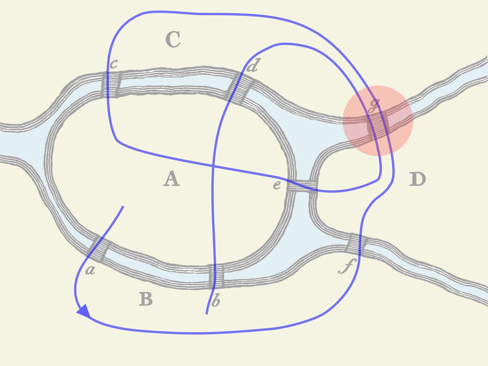

Testing the update function

assert1 :: Spec Unit
assert1 =
it "should follow the walk and visit the expected intermediate states" do
assertWalk update
(v @"LandA")
[ v @"Cross_a" ~> v @"LandB"
, v @"Cross_f" ~> v @"LandD"
, v @"Cross_g" ~> v @"LandC"
, v @"Cross_c" ~> v @"LandA"
, v @"Cross_e" ~> v @"LandD"
, v @"Cross_g" ~> v @"LandC"
, v @"Cross_d" ~> v @"LandA"
, v @"Cross_b" ~> v @"LandB"
]